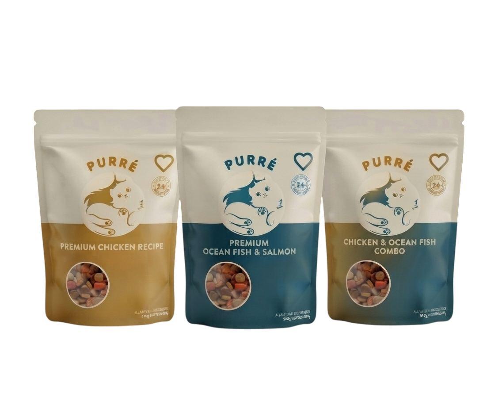
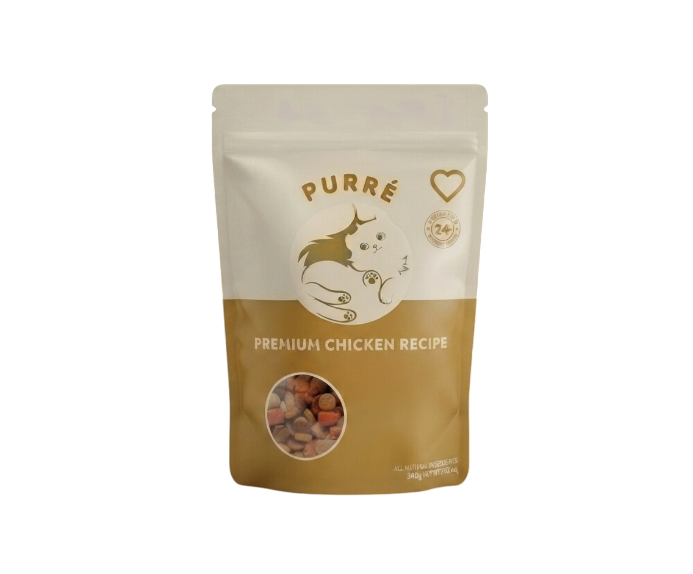
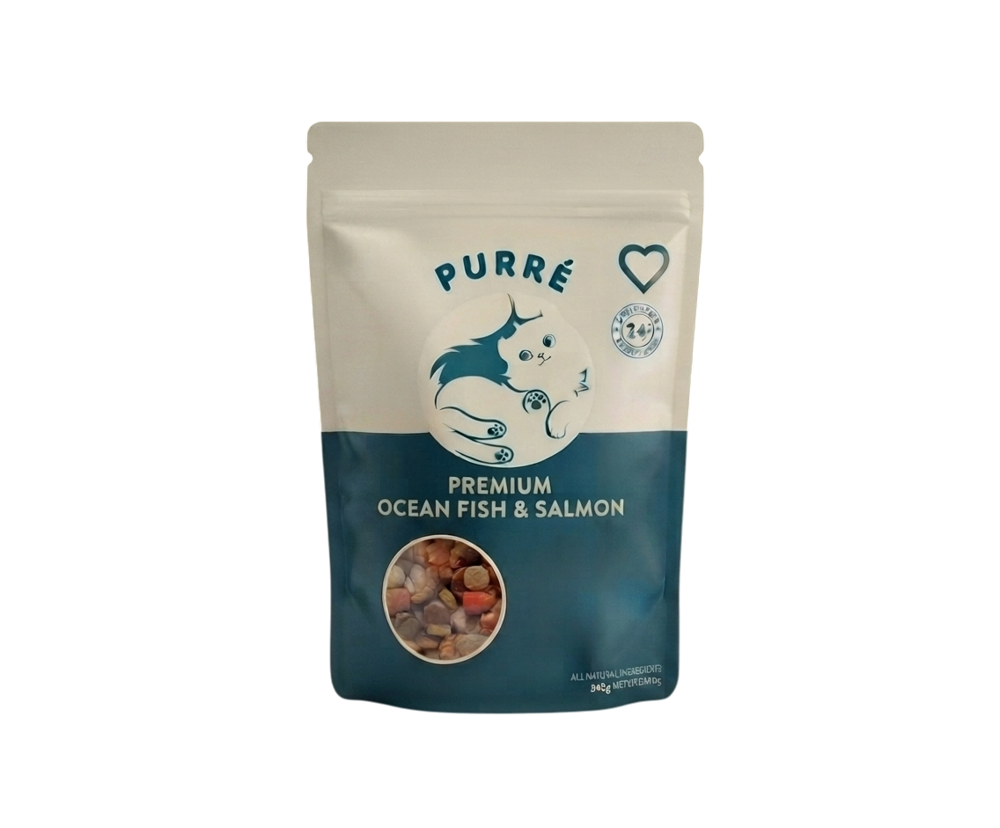
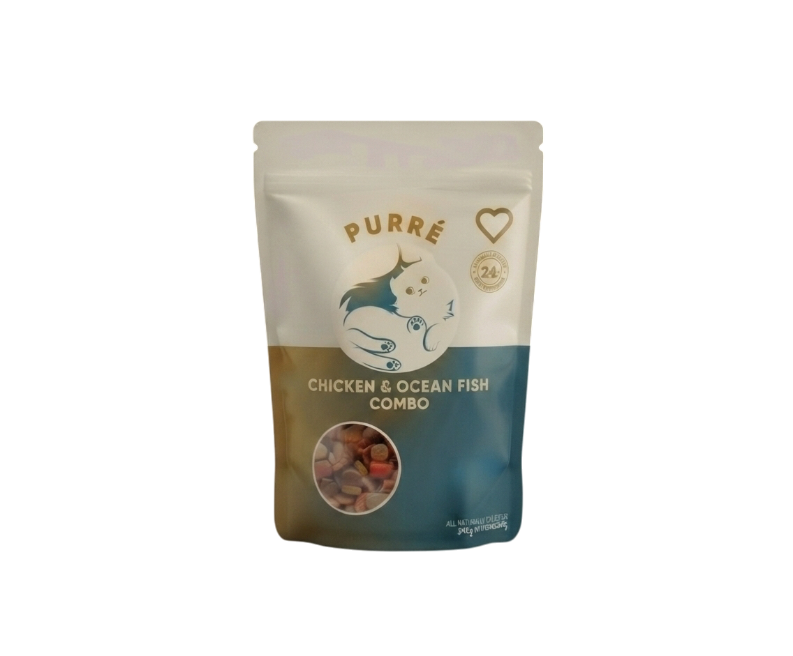

Mission
To make quality cat food affordable while improving the lives of animals and people.
Affordable nutrition for your cat while helping shelters, rescue organizations, and stray animals across Bangladesh.

To make quality cat food affordable while improving the lives of animals and people.
To become one of Bangladesh's most trusted and socially responsible pet food brands.
Better Food, Better Care.
PURRe's first year is focused on building trust, expanding across Bangladesh, supporting animal welfare, and creating a strong foundation for long-term growth.
Finalize our branding, complete product sourcing from China, prepare packaging, register the business, and launch the official website and social media platforms.
Import the first shipment, photograph products, establish partnerships with veterinary clinics and pet shops, and prepare nationwide delivery.
Officially introduce PURRe in Dhaka through online sales, social media campaigns, promotional offers, and our "Every Purchase Supports a Cat" initiative.
Launch the "Share Kindness This Ramadan" campaign by donating a portion of every purchase to shelters and rescue organizations while publishing transparent donation updates.
Release Eid gift bundles, offer limited-time discounts, organize giveaways, and collaborate with local pet influencers to increase brand awareness.
Celebrate the Bengali New Year with special edition packaging, adoption events, referral rewards, and community-based campaigns promoting responsible pet care.
Expand distribution into Chattogram, Khulna, Sylhet, and Rajshahi while recruiting university student ambassadors across Bangladesh.
Launch our loyalty programme with monthly subscriptions, reward points, exclusive discounts, and free delivery for qualifying orders.
Organize food donation drives, support rescue organisations, publish transparency reports, and share stories of rescued cats helped through customer purchases.
Introduce festive promotions, limited-edition bundles, social media contests, and community feeding programmes for stray animals.
Promote winter nutrition, expand veterinary partnerships, support stray feeding initiatives, and introduce seasonal nutrition bundles.
Celebrate PURRe's first year by publishing our annual impact report, announcing future products, revealing donation statistics, and introducing plans for the future PURRe Animal Shelter.
Direct sourcing allows us to keep prices accessible for more cat owners.
Chicken, Ocean Fish, Tuna, Salmon, Beef and more to come.
Every packet contributes towards helping shelters and rescued animals.



Packets Sold
Money Donated
Shelters Supported
Cats Helped